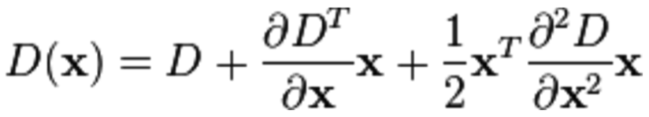

Construct Scale Space
1. Gaussian Blur
Gaussian Blur is an image filter. It uses normal distribution as calculation template and convolute it to original image to accomplish the purpose of blurring images. The 2D Gaussian Function is as following:
The convolution function is as following:
σ is standard deviation for normal distribution. The larger the σ the more dim is the image. r is the blur radius specifying the distance between element and the template center. (m, n) specifies the dimension of the template.

2. Image pyramid
For an image I, construct images in different scales which are called octave. This step is for the purpos of scale-invariant. In each of the scales there exists corresponding key points. The first scale is the double size of the original image, the second is the image of original size, and the following layers are scaling down gradually.
SIFT Stages
1. Scale-Space Extrema Detection
Key points composes of local extrema (maxima or minima) from DOG (difference of Gaussian). In order to extract the extrema, every pixel is compared to all its neighbors to see whether it is the largest or smallest among all its neighbors. It is compared to the points within its own scale, 9 points from its upper scale and 9 points from its lower scale. This is to ensure the extrema are detected in all scales.
2. Keypoint Localization
Utilizing linear fitting to determine the location of key points. At meantime, points with low contrast will be eliminated. We will fit the DOG (Difference of Gaussian) function using its Taylor Expansion.
D(x, y, sigma) is the candidate key point in this case. Sigma specifies the Gaussian layer of this key point. Our goal is to get x_hat(x, y, sigma) that specifies the actual key point position.
3. Orientation Assignment
In order to give the descriptor the feature of rotation invariance, it is necessary to assign an orientation for each key point. Image gradient is utilized to get stable orientations within local scale. For each the key point extracted from DOG pyramid, we collect the orientation distribution feature from its neighbor scales. We utilize following formula:
Given the calculation result of key points. We use histogram to calculate statistics of the gradient and orientation in neighbor scales. Histogram will have 36 bins (divide 360 degrees into 36 directions each direction represents for 10 degree.
4. Picture Matching
Given location of each key point, scale each key point lies in and direction for each key point. We then can use Euclidean Distance to match for each key point within two pictures.